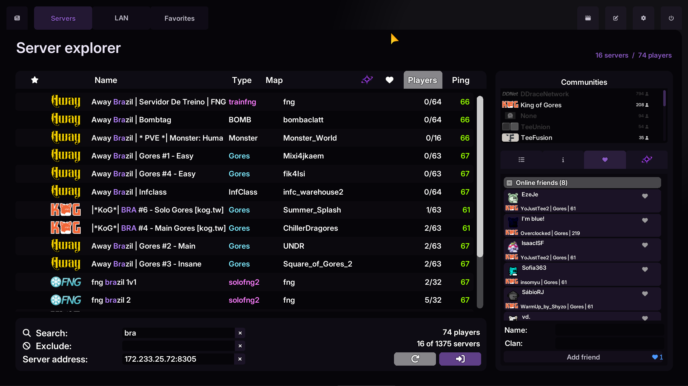

Fast Input.
Mais controle.
Reduced visual delay com a interpolação do TClient. Escolha o Fast Input e ajuste a intensidade nas configurações de input.
Mais controle sobre o movimento. Mais espaço para a sua comunidade. Um novo jeito de viver cada mapa.

DDNet 20.1/TClient 10.9.0/NovaClient
Do primeiro hook ao último checkpoint, deixe o cliente com a sua cara.
Reduced visual delay com a interpolação do TClient. Escolha o Fast Input e ajuste a intensidade nas configurações de input.
Perfis de smoothing com e sem AntiPing. Informe o ping e escolha quando ativar a suavização visual dos players.
Acompanhe as mensagens do seu canal no chat do cliente, com som e volume de notificação configuráveis.
Um navegador com mais servidores e amigos visíveis, tema preto e roxo e acesso a perfis e teammates do KoG.
O reduced visual delay acompanha a interpolação visual da base original.
Suavização em players vivos em movimento e em quem está puxando você, sem efeito adicional nos alvos do seu drag.
Listas com melhor aproveitamento de espaço e cartões de amigos mais equilibrados.
Baixe o pacote completo para Windows x64.
O pacote inclui o executável, DLLs e os assets necessários.
Mantenha as DLLs e a pasta data ao lado do executável.
Escolha seu servidor e ajuste o NovaClient nas configurações.
Use o pacote mais recente para Windows x64. O NovaClient está em beta; consulte as notas da release para acompanhar as mudanças.
Sim. O smoothing tem configurações próprias para jogar com ou sem AntiPing. O cliente escolhe o perfil conforme a predição de players está ativa.
Todas as versões publicadas ficam na página de releases no GitHub.